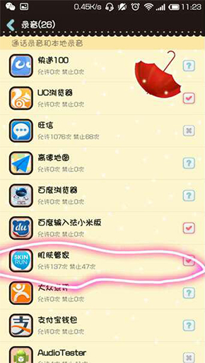
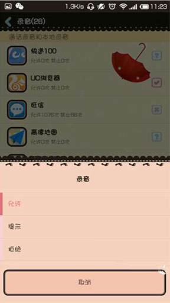
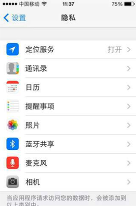
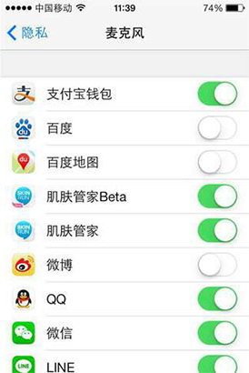

-
1、肌肤管家适配哪些机型？
Ios系列产品：Ios6.1.3以上系统（建议升级新版本使用）
Andriod系列产品：Android2.3及以上的智能手机。 -
2、肌肤管家APP 安装不上？
确认手机是否为肌肤管家适配机型。具体请参考第2
-
3、注册账号时，提示此手机号已被注册？
一个手机号只能注册激活一个帐号，如需注册新帐号，请使用未注册过的手机号进行注册激活。
-
4、如何判断肌肤管家测试仪连接成功？
将设备直接插入手机音频口 或将设备连接延长线插入手机音频口，查看您的设备是否正确连接手机；若连接失败（ios系列手机显示：请连接肌肤管家；Andriod系列手机显示：连接未成功），请查看设备连接，是否有松动或非正常状态。
-
5、肌肤管家连接成功，但无法显示测试数据
打开肌肤管家APP，登录后，如果设备已显示连接，但仍无法测试，请尝试下列操作：
1)使用延长线：非手持手机情况下进行测试；
2)检查手机麦克风是否已打开：必须在系统设置里，将麦克风开启，才能正常使用；安卓系统麦克风设置↓ ios系统麦克风设置↓ 3)重启肌肤管家app：退出APP并确认应用程序完全退出，重启再次尝试；
4)充电：设备先充电，确认充电时指示灯亮；
5)重启手机：关闭设备电源并重启。 -
6、测试数据异常
1）Ios系列手机显示：“莫非肌肤管家测试有误？请再来一次！”，说明数据加载异常，是因为在使用的时候触碰到了iPhone手机的金属边缘，所以在使用iPhone手机测试时，最好连接延长线，然后把手机平放在桌子上来进行测试！添加手机壳也是不错的选择！
2）Andriod系列手机显示：“数据加载异常”，说明当下网络状况不好，请重新多试几次。或待网络状况良好之后，重新测试，如未果，请联系客服电话：400-003-7993。 *在进行测试时，一定要在“滴滴”2声后，再将测试头贴于检测部位，待“滴”1声长音结束后，将测试头放下，测试结束，否则会影响数据的准确性。 -
7、关于肌肤年龄
肌肤管家关于肌肤年龄的算法是受用户注册帐号时所填写的出生日期、肤质和所在地区因素影响的。如果用户使用同一帐号，测试不同年龄人的肌肤，会出现肌肤年龄相差很小甚至没有差距的结果。所以我们的建议是：肌肤管家硬件可以共享，但尽量同一个手机，只用一个帐号来测试。
-
8、请勿在以下情况适用仪器（影响测试数据）
1)底妆或化妆后；
2)有水或出汗后；
3)手机充电时；
*在进行测试时，一定要在“滴滴”2声后，再将测试头贴于检测部位，待“滴”1声长音结束后，将测试头放下，测试结束。 -
9、更换手机，设备可以用吗？
可以。在新的手机上登陆已注册的手机号。
-
10、肌肤管家电量可以用多久？
正常使用，肌肤管家充满电待机30天左右。
-
11、肌肤管家指示灯状态说明
设备正常开启中
设备电量低 -
12、如何给肌肤管家充电？
如果硬件电量耗光（按下设备上的开关按钮时亮红灯或者不亮；测试时只出现“滴滴”2声，没有“滴”1声结束的提示），提醒要及时充电。用肌肤管家包装盒里所配备的电源线就可以充电。指示灯为蓝色时，表示正在充电；指示灯由蓝变灭，表示
-
13、下载的APP更新后不能正常启动，某些功能出现闪退？
如遇到这个问题，需要关闭手机其他程序，再重新开启肌肤管家；或卸载后，重新安装最新版本APP。如果还有此现象，请先咨询客服电话。
-
14、其他问题
如还有其他问题，请致电肌肤管家官方售后电话：400-003-7993，私信新浪官方微博：@肌肤管家SkinRun，我们会第一时间回复您。